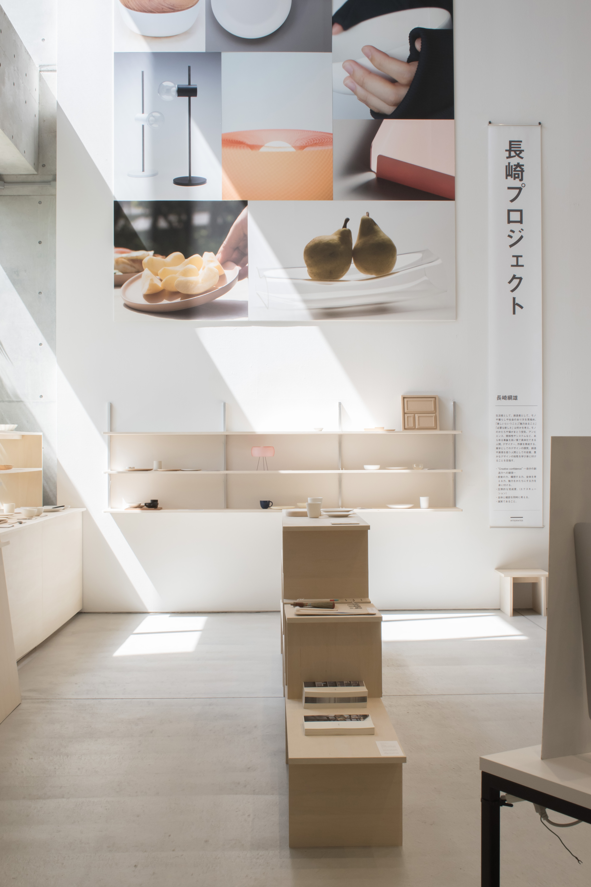
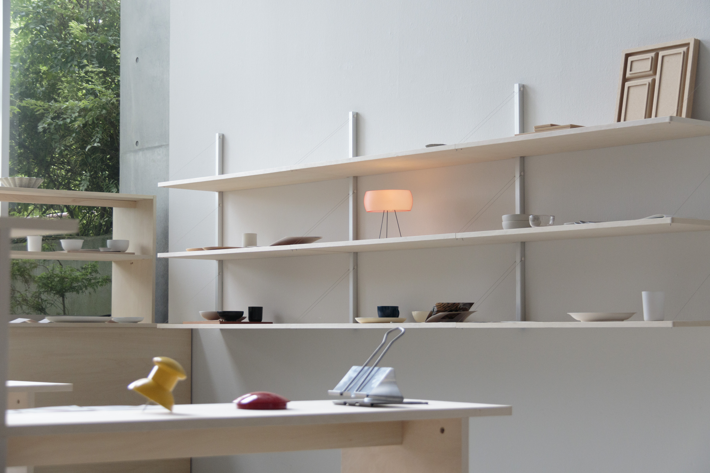
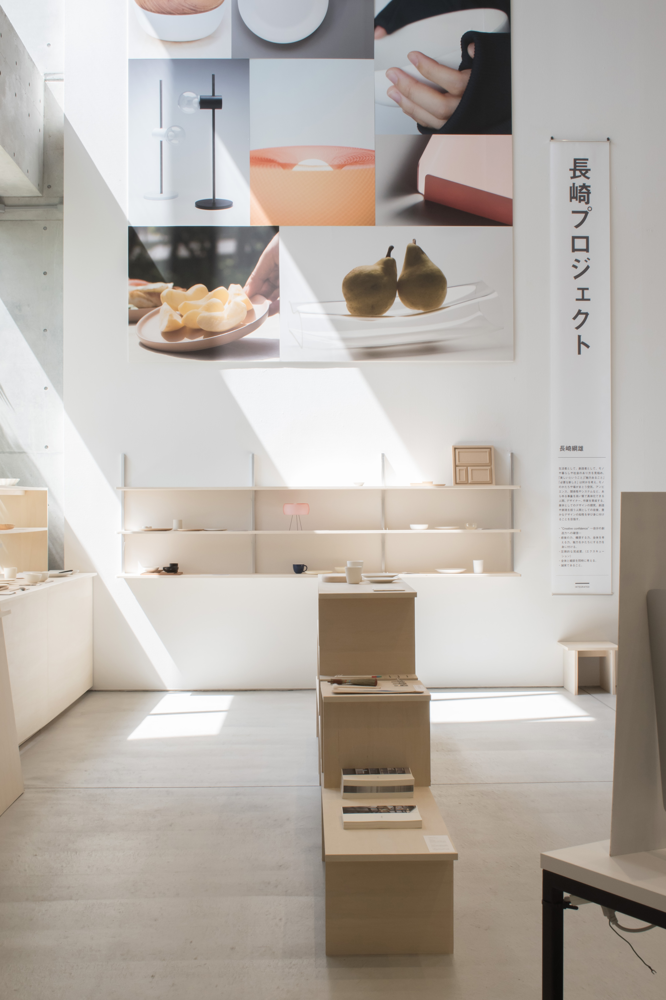
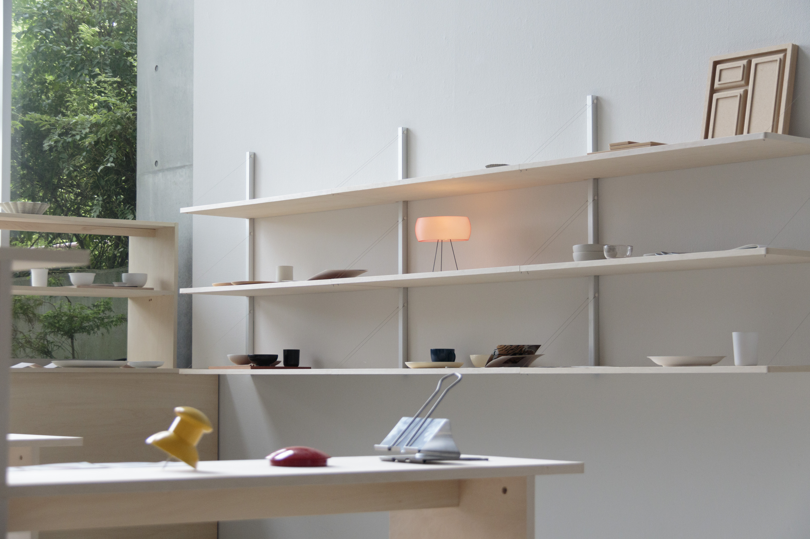

Project_A OpenCampus 2024
多摩美術大学統合デザイン学科長崎綱雄・角尾舞プロジェクトオープンキャンパス展示 展示対象はこれから 大学進学を考える高校生。私は主に、グラフィックを中心とした空間のアートディレクションやパネルデザインの制作を行いました。 展示作品の「素敵な朝食」(お皿のデザイン)と「組み立て式の棚」を展示什器を課題として制作、展示。 Tama Art University Integrated Design Open Campus 2O24 CD : Tsunao Nagasaki AD,D : Nozomi Terashima Space Design : Koharu Miyata Book Design : Sara Yoeyama Motion Design : Seira Tomioka, Yuna Yokoyama, Panel Design: Nozomi Terashima Shelf Design : Project_A CL: INTEGRATED DESIGN

 


